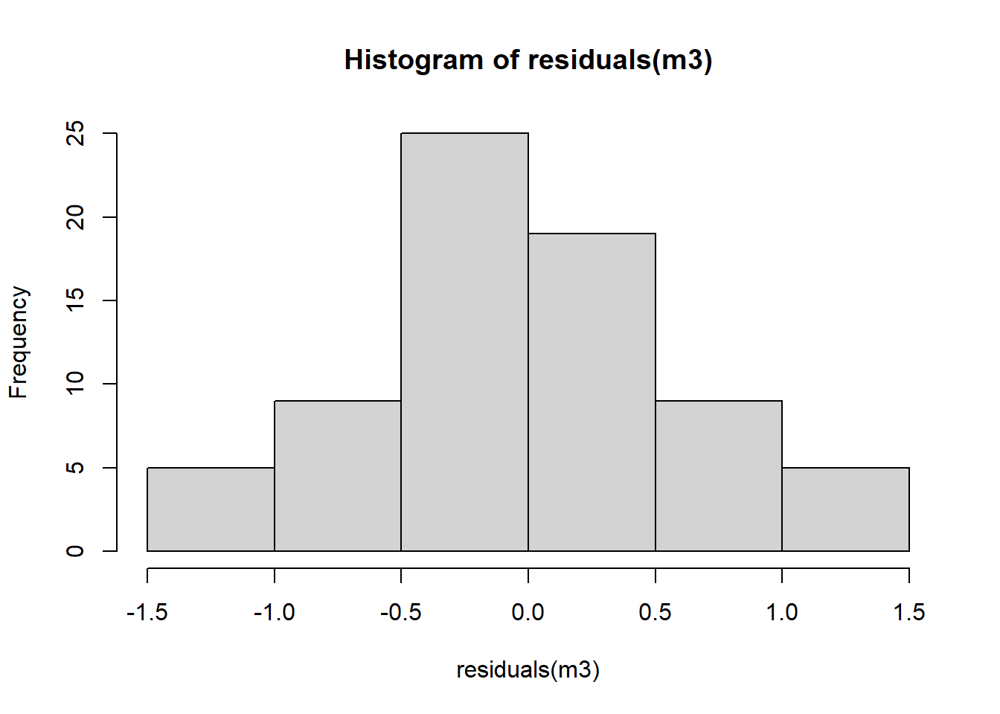
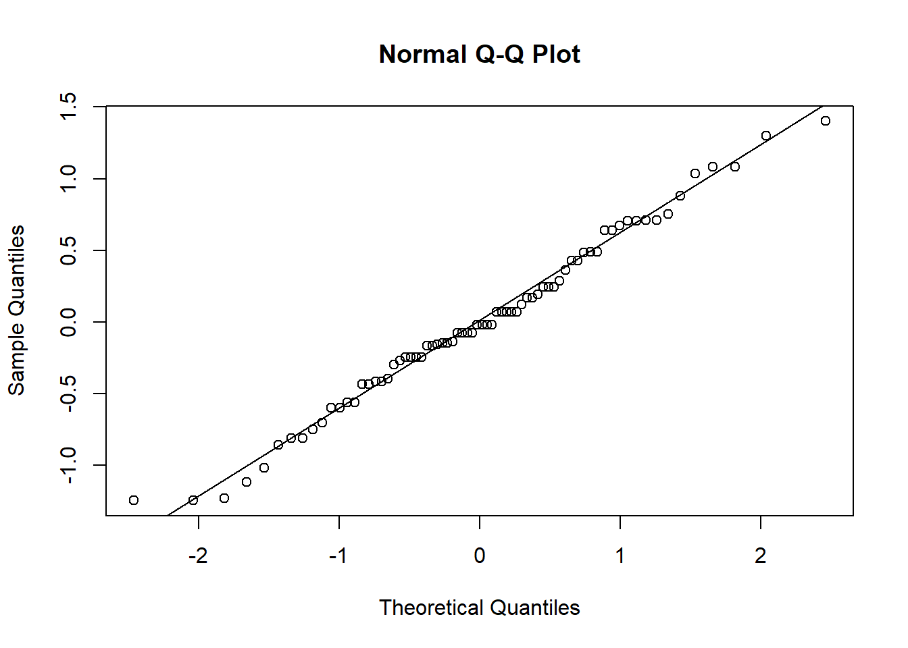

library(tidyverse)
library(datasets)
insetos <- InsectSprays
insetos |>
ggplot(aes(spray, count))+
geom_boxplot()+
geom_jitter(width = 0.1)Aula 3 - Transformação de dados
Transformação de dados
Vamos analisar o efeito de diferentes tipos de inseticidas (spray) sobre a contagem de insetos (count) usando métodos estatísticos adequados. Para isso vamos usar um dataset do R. O foco é verificar diferenças significativas entre grupos, garantindo que as premissas dos testes paramétricos sejam atendidas. Caso não sejam, parte-se para alternativas não paramétricas ou modelos mais adequados (GLM).
Teste de homogeneidade de variâncias
bartlett.test(count ~ spray, data = insetos)
Bartlett test of homogeneity of variances
data: count by spray
Bartlett's K-squared = 25.96, df = 5, p-value = 9.085e-05# A normalidade pode ser um pouco violada, mas a homogeneidade de variância é crucial para ANOVASe não houver homogeneidade, o teste F do ANOVA não é confiável
Transformação Raiz quadrada (sqrt)
m2 <- lm(sqrt(count) ~ spray, data = insetos)
hist(residuals(m2))shapiro.test(residuals(m2)) #shapiro é mais rigoroso,especialmente com n pequeno
Shapiro-Wilk normality test
data: residuals(m2)
W = 0.98721, p-value = 0.6814qqnorm(residuals(m2)); qqline(residuals(m2))
Aplicou-se a transformação raiz quadrada (sqrt) na variável count para melhorar a homogeneidade das variâncias e a normalidade dos resíduos.
Teste de Shapiro-Wilk e gráficos Q-Q para avaliar se os resíduos seguem distribuição normal (pré-requisito da ANOVA
Modelo linear com resposta transformada (ANOVA paramétrico)
ANOVA é aplicada sobre os dados transformados, assumindo que os resíduos agora estão mais adequados.
## aternativa 1 - transforma a resposta em raiz quadrada (sqrt)
m3 <- lm(sqrt(count) ~ spray, data = insetos)
hist(residuals(m3))
shapiro.test(residuals(m3))
Shapiro-Wilk normality test
data: residuals(m3)
W = 0.98721, p-value = 0.6814qqnorm(residuals(m3))
qqline(residuals(m3))
anova(m3)Analysis of Variance Table
Response: sqrt(count)
Df Sum Sq Mean Sq F value Pr(>F)
spray 5 88.438 17.6876 44.799 < 2.2e-16 ***
Residuals 66 26.058 0.3948
---
Signif. codes: 0 '***' 0.001 '**' 0.01 '*' 0.05 '.' 0.1 ' ' 1Comparação das médias:
library(emmeans)
library(multcomp)
m33 <- emmeans(m3, ~ spray, type = "response")
cld(m33) spray response SE df lower.CL upper.CL .group
C 1.55 0.452 66 0.779 2.58 1
E 3.27 0.656 66 2.095 4.72 12
D 4.68 0.785 66 3.248 6.38 2
A 14.14 1.360 66 11.550 17.00 3
B 15.03 1.410 66 12.352 17.97 3
F 16.15 1.460 66 13.370 19.19 3
Confidence level used: 0.95
Intervals are back-transformed from the sqrt scale
Note: contrasts are still on the sqrt scale. Consider using
regrid() if you want contrasts of back-transformed estimates.
P value adjustment: tukey method for comparing a family of 6 estimates
significance level used: alpha = 0.05
NOTE: If two or more means share the same grouping symbol,
then we cannot show them to be different.
But we also did not show them to be the same. plot(m33)
Usa emmeans para obter médias ajustadas dos grupos e cld() para letras indicando diferenças significativas (grupos com letras diferentes são significativamente diferentes
Alternativa não paramétrica – Kruskal-Wallis
Se nem transformação salvar os pressupostos, usamos o teste de Kruskal-Wallis, que é a versão não paramétrica da ANOVA
## alternativa 2 - teste não paramétrico
library(agricolae)
library(rstatix)
kruskal.test(count ~ spray, data = insetos)
Kruskal-Wallis rank sum test
data: count by spray
Kruskal-Wallis chi-squared = 54.691, df = 5, p-value = 1.511e-10kruskal_test(insetos, count ~ spray)# A tibble: 1 × 6
.y. n statistic df p method
* <chr> <int> <dbl> <int> <dbl> <chr>
1 count 72 54.7 5 1.51e-10 Kruskal-Walliskruskal(insetos$count, insetos$spray, group = TRUE, console = TRUE)
Study: insetos$count ~ insetos$spray
Kruskal-Wallis test's
Ties or no Ties
Critical Value: 54.69134
Degrees of freedom: 5
Pvalue Chisq : 1.510845e-10
insetos$spray, means of the ranks
insetos.count r
A 52.16667 12
B 54.83333 12
C 11.45833 12
D 25.58333 12
E 19.33333 12
F 55.62500 12
Post Hoc Analysis
t-Student: 1.996564
Alpha : 0.05
Minimum Significant Difference: 8.462804
Treatments with the same letter are not significantly different.
insetos$count groups
F 55.62500 a
B 54.83333 a
A 52.16667 a
D 25.58333 b
E 19.33333 bc
C 11.45833 c#Shapirowilk verifica a normalidade dos dados, o teste de homogeneidade de variancias (levene e barlett)kruskal()do pacote agricolae já mostra quais grupos são diferentes, estilo letras post hoc.
Análise de resíduos
## Aula 23/04
library(DHARMa)
m2
Call:
lm(formula = sqrt(count) ~ spray, data = insetos)
Coefficients:
(Intercept) sprayB sprayC sprayD sprayE sprayF
3.7607 0.1160 -2.5158 -1.5963 -1.9512 0.2579 plot(simulateResiduals(m3))
#adicionei o sqrt no m2= fiz a raiz quadrada - m2 <- lm(sqrt(count) ~ spray, data = insetos) para que melhore a homogeneidade das variancias
library(emmeans)
#em caso que não conseque fazer transformações que deixem os dados normais deve-se utilizar os testes não paramétricosSimula resíduos com o pacote DHARMa, que dá uma avaliação mais confiável da qualidade do ajuste do modelo, principalmente útil para GLM e dados de contagem.
Alternativa paramétrica com GLM Poisson
m4 <- glm(count ~ spray, data = insetos, family = poisson())Como count é uma variável de contagem, ajusta-se um modelo linear generalizado (GLM) com distribuição de Poisson, que dispensa a normalidade dos resíduos.
anova(m4)Analysis of Deviance Table
Model: poisson, link: log
Response: count
Terms added sequentially (first to last)
Df Deviance Resid. Df Resid. Dev Pr(>Chi)
NULL 71 409.04
spray 5 310.71 66 98.33 < 2.2e-16 ***
---
Signif. codes: 0 '***' 0.001 '**' 0.01 '*' 0.05 '.' 0.1 ' ' 1library(car)
library(multcomp)
Anova(m4)Analysis of Deviance Table (Type II tests)
Response: count
LR Chisq Df Pr(>Chisq)
spray 310.71 5 < 2.2e-16 ***
---
Signif. codes: 0 '***' 0.001 '**' 0.01 '*' 0.05 '.' 0.1 ' ' 1plot(simulateResiduals(m4))medias_m4 <- emmeans(m4, ~ spray, type = "response")
cld(medias_m4) spray rate SE df asymp.LCL asymp.UCL .group
C 2.08 0.417 Inf 1.41 3.08 1
E 3.50 0.540 Inf 2.59 4.74 12
D 4.92 0.640 Inf 3.81 6.35 2
A 14.50 1.100 Inf 12.50 16.82 3
B 15.33 1.130 Inf 13.27 17.72 3
F 16.67 1.180 Inf 14.51 19.14 3
Confidence level used: 0.95
Intervals are back-transformed from the log scale
P value adjustment: tukey method for comparing a family of 6 estimates
Tests are performed on the log scale
significance level used: alpha = 0.05
NOTE: If two or more means share the same grouping symbol,
then we cannot show them to be different.
But we also did not show them to be the same. library(performance)
m2 <- lm(count ~ spray, data = insetos)
hist(residuals(m2))
shapiro.test(residuals(m2))
Shapiro-Wilk normality test
data: residuals(m2)
W = 0.96006, p-value = 0.02226qqnorm(residuals(m2))
qqline(residuals(m2))
ANOVA no contexto GLM (car::Anova) + diagnóstico de resíduos + comparação entre grupos com emmeans.
check_model(m2)performance::check_model() fornece diagnóstico visual e numérico do modelo: normalidade, homogeneidade, outliers, colinearidade etc.
O conjunto de dados InsectSprays foi analisado para comparar a eficácia de diferentes inseticidas com base na contagem de insetos. Inicialmente, foram avaliadas as suposições da ANOVA, revelando ausência de homogeneidade de variâncias (teste de Bartlett) e indícios de não normalidade nos resíduos (Shapiro-Wilk e Q-Q plot). Para contornar essas limitações, aplicou-se uma transformação raiz quadrada na variável resposta, permitindo o uso de ANOVA com comparação de médias por emmeans. Como alternativa, utilizou-se o teste não paramétrico de Kruskal-Wallis, mais robusto frente à violação dos pressupostos, e também um modelo GLM com distribuição de Poisson, mais apropriado para dados de contagem. Os diagnósticos dos modelos (via DHARMa e check_model) confirmaram a adequação do ajuste, permitindo concluir que houve diferenças estatísticas significativas entre os tipos de spray utilizados.